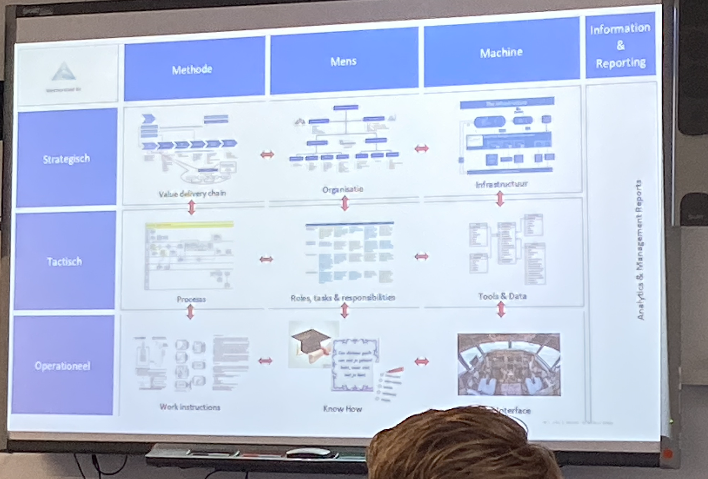
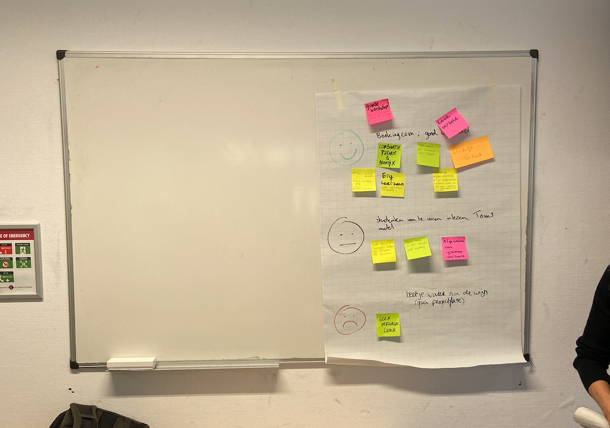

Week 7+: Afronding Smart Technology en bedrijfsbezoeken
introductie
Na de eerste 6 weken gewerkt te hebben met het printboard en Arduino gingen we met Smart Technology aan de slag met Solid Works en solderen. Verder hebben we naast het project ook nog een aantal bedrijfsbezoeken gehad.
Eerste weken
In de eerste paar weken was het vooral kennis maken met het programma Solid Works, want het is een complexe applicatie. Gelukkig heb ik tijdens mijn Stage bij Hyster-Yale al veel met een soortgelijk programma moeten werken dus ik had het snel door. In de eerste week kregen we een rondleiding in het FabLap in Arnhem. Dit kregen we van een jongedame die alles regelde daar. Hieronder drie foto’s van deze dag.

Solderen
De groep is ook gaan solderen maar ik kon hier op dat moment helaas niet bijzijn vanwege een begrafenis. Dit heb ik op een later tijdstip ingehaald met Jeromme. Omdat we de PCB en het opslagkistje van Miranda gingen gebruiken tijdens het Seminar had ik ervoor gekozen om direct op het printplaatje te solderen. Ik had namelijk kabeltjes te weinig en voor mij ging het om het solderen. Hieronder een foto te zien daarvan.
Afsluiting Smart Technology
Toen de ‘Tassie’ (Miranda verzonnen) geprint was moest de PCB er nog in worden geplaats en werkend worden gemaakt. Omdat veel soldeerpunten in de tas van Miranda kapot waren gegaan moest ik met wat kroonsteentjes de boel repareren. Dit is wel gelukt en is in de foto’s hieronder te zien.
Bedrijfsbezoek 1: kookworkshop
Het eerste bedrijfsbezoek was niet echt een bedrijfsbezoek maar weer een workshop. Toch benoem ik hem hierbij omdat het niet in de eerste 6 weken plaatsvond. We gingen met de gehele groep koken in teams met onbekende ingrediënten. Het doel was om niet te gaan maken wat voor de hand lag. Dit was nog een moeilijke opgave want wat wij kregen was: rijst, zeewier plakken en sushiopvulling. Wat anders kan je hiermee maken dan Sushi? Na lang overleg kwamen we uit op een ‘PokeBowl’ en het resultaat is hieronder te zien. Daarnaast heb ik nog een aantal foto’s van andere gerechten de mannen met een schort.
Bedrijfsbezoek 2: NXP
Het tweede bedrijfsbezoek was bij NXP. Hier kregen we uitleg over voornamelijk de ICT-afdeling van het bedrijf. Dit vond ik niet echt interessant omdat het totaal niet mijn vakgebied is. Toch wel goed om hier een keer over te horen en wat er wel niet allemaal achter ICT zit. We gingen helaas niet het productieproces in want daar zitten strenge regels aan verbonden. Naast de presentatie bij NXP ben ik ook langs een vriend gegaan die op de afdeling inkomende goederen zit. Hij loopt op dit moment stage bij NXP en ben even bij hem langs geweest. Verder hadden we ook direct een intervisie bij NXP. Hierbij moesten we een Team charter invullen met je projectteam. Binnen ons projectteam zijn we erachter gekomen dat we veel sommige nogal een doordrukkende mening hebben. Dit is niet verkeerd als je maar weet dat dit speelt. Dit hebben we beschreven in de Team charter. Hieronder 2 foto’s over het bezoek bij NXP en 1 foto van de Team Charter.

Bedrijfsbezoek 3: Uitleg 9 vlakkenmodel
Net als bedrijfsbezoek 1 valt bedrijfsbezoek 3 niet echt onder de bedrijfsbezoeken. Toch wil het even benoemen in mijn portfolio. We kregen uitleg over het 9 vlaks model en hoe je deze kunt toepassen. Verder moest ieder groepje een BMC van je projectbedrijf maken om te kunnen laten zien in de les. 3 foto’s en de presentatie BMC Kropman is hieronder te zien.
 
Bedrijfsbezoek 4: Oceanz
Bij het 4e bedrijfsbezoek gingen we op bezoek bij Oceanz. Dit is een professioneel 3D-print bedrijf wat opdrachten uitvoert voor klanten. Ze hebben geavanceerde technologie in huis waarmee ze snel en goedkoop kunnen 3D-printen. Het was mooi om een kijkje daarbinnen te krijgen en om deze machines aan het werk te zien. Hieronder is een foto te zien van het bezoek aan Oceanz.
Bedrijfsbezoek 5: Blockchain
Het laatste bedrijfsbezoek wat ik wil benoemen is het gastcollege over Blockchain. Ondanks dat ik later was door de Tandarts vond ik het een interessant verhaal van Arjen van Ooijen. Hij heeft ons goed uitgelegd wat Blockchain nou precies inhoudt en wat je er allemaal me kan doen. Verder hebben we die dag een soort van generale repetitie gedaan voor het Seminar. Het was al leuk om te zien wat iedereen had uitgewerkt en wat iedereens idee was. Hieronder tweetal foto's van het hoorcollege.